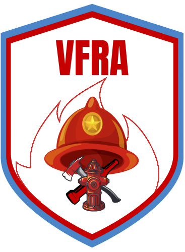
Thành viên Hiệp hội PCCC & CNCH Việt Nam (VFRA) Member of Vietnam Fire & Rescue Association (VFRA) Chuyển Đổi Số PCCC & CNCH 2026 Fire Safety Digital Transformation 2026
HỆ SINH THÁI GIÁM SÁT &
QUẢN LÝ PCCC TOÀN DIỆN
COMPREHENSIVE FIRE ALARM
MONITORING & MANAGEMENT ECOSYSTEM
“Công cụ chuyển đổi số dữ liệu hệ thống phòng cháy chữa cháy — Giải pháp nâng cao hiệu quả quản lý, bảo trì và kiểm tra thiết bị theo thời gian thực” “Digital transformation platform for fire protection systems — Enhancing real-time management, maintenance, and equipment inspection efficiency”
-
✓
Kết nối liền mạch: Tủ báo cháy trung tâm ➔ Thiết bị Gateway ➔ Cloud Server ➔ Web CMS & App Di động. Seamless Connectivity: Fire Alarm Control Panel ➔ Gateway Device ➔ Cloud Server ➔ Web CMS & Mobile App.
-
✓
Rút ngắn “Thời gian vàng”: Định vị điểm sự cố trên đồ họa mặt bằng số hóa & Kết hợp xác minh qua camera CCTV chỉ trong vài giây. Optimize “Golden Time”: Pinpoint incident locations on digitized floorplans & verify via CCTV cameras within seconds.
-
✓
An toàn tuyệt đối: Giám sát online 24/7 ➔ Mọi sự cố hệ thống luôn được cập nhật theo thời gian thực Absolute Safety: 24/7 online monitoring ➔ All system incidents are continuously updated in real time
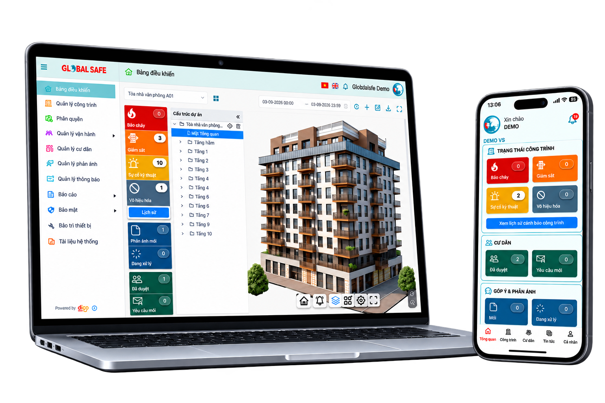
🔍 Phóng to🔍 Zoom inThực Trạng Quản Lý: Rủi Ro Từ Sự Phân Mảnh Dữ Liệu Management Reality: Risks of Data Fragmentation
Hệ thống PCCC hiện tại hoạt động cục bộ và phụ thuộc nhiều vào quy trình vận hành tại chỗ Existing fire protection systems operate locally and rely heavily on on-site manual procedures
Giám Sát Tập Trung Tại Phòng Điều Khiển On-Site Control Room Monitoring
Thông tin báo cháy hiện được theo dõi trực tiếp tại tủ trung tâm, chưa có kênh chia sẻ tức thời cho cấp quản lý và bộ phận liên quan ở bên ngoài. Fire alarm events are currently monitored directly at the central panel, without an instant sharing channel for off-site managers and relevant teams.
Nguy Cơ Bỏ Lỡ “Thời Điểm Vàng” Chữa Cháy Risk of Missing the “Golden Time” for Fire Response
Mất nhiều thời gian xác định vị trí xảy ra sự cố để xác minh đám cháy thật hay lỗi thiết bị, dễ bỏ lỡ thời điểm vàng chữa cháy. Locating incidents and verifying real fires versus device faults takes too much time, risking the critical golden window for firefighting.
Giới Hạn Khoảng Cách Địa Lý Giữa Các Dự Án Geographical Distance Limits Between Projects
Không thể giám sát từ xa và quản lý đồng thời nhiều dự án/tòa nhà tại các tỉnh thành khác nhau (Hà Nội, Đà Nẵng, TP.HCM...). Unable to monitor remotely or manage multiple projects and buildings simultaneously across different provinces and cities.
Bảo Trì Thủ Công & Dữ Liệu Lưu Trữ Rời Rạc Manual Maintenance & Fragmented Stored Data
Dữ liệu từ tủ báo cháy chưa được số hóa; lưu trữ giấy tờ khó thống kê/tra cứu ngay lập tức; bảo trì bị động tốn nhiều chi phí. Fire panel data is undigitized; paper records make instant lookup and statistics difficult; reactive maintenance wastes resources.
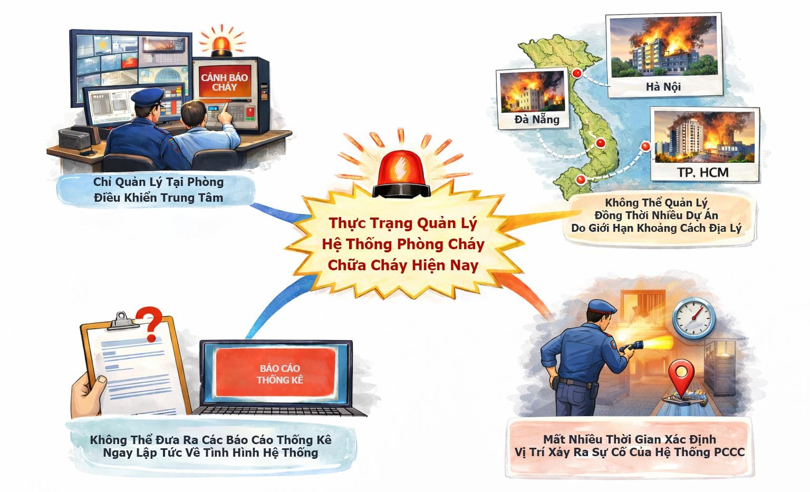
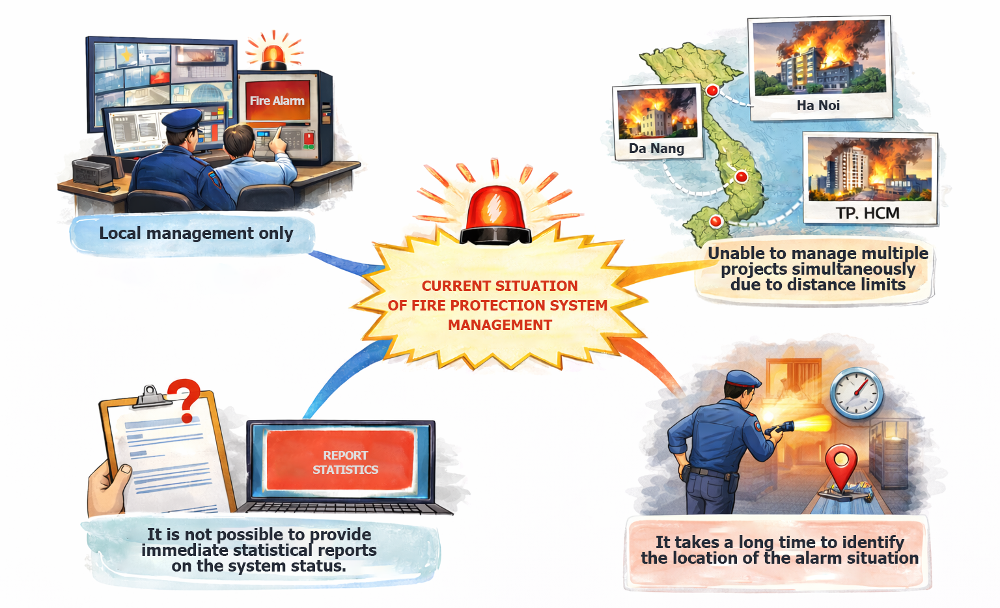
🔍 Phóng to🔍 Zoom inKiến Trúc Hệ Sinh Thái Ecosystem Architecture
Kết nối liền mạch từ Thiết bị phần cứng ➔ Nền tảng đám mây ➔ Phần mềm ➔ Thao tác của người dùng Seamless integration from Hardware Devices ➔ Cloud Platform ➔ Software Applications ➔ User Operations
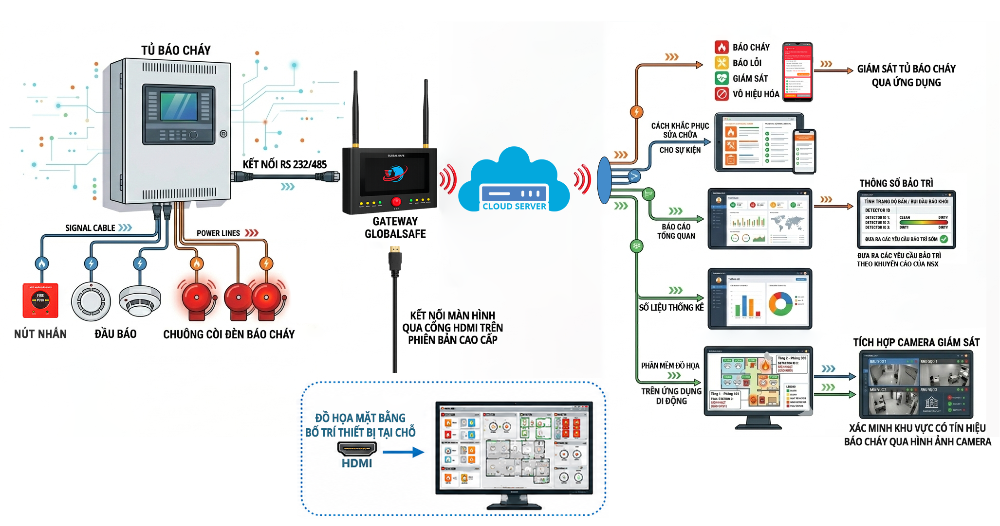
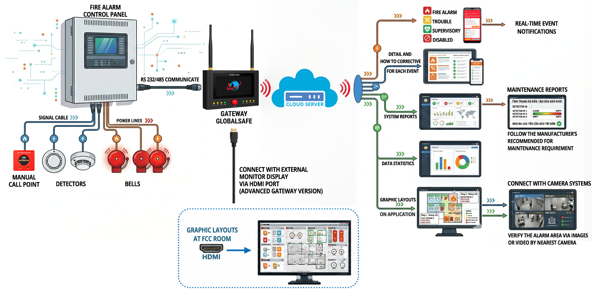
🔍 Phóng to🔍 Zoom inLợi Ích Cốt Lõi Của Hệ Sinh Thái Core Benefits of the Ecosystem
-
⚡
Rút ngắn thời gian ứng phó sự cố: Cảnh báo đẩy đa kênh tức thì đến đúng người vận hành & quản lý. Shorten incident response time: Instant multi-channel push notifications to the right operators & managers.
-
📹
Xác minh khu vực báo cháy qua Camera: Tự động hiển thị luồng hình ảnh camera an ninh được trang bị tại khu vực đầu báo kích hoạt. Verify alarm zones via Camera: Automatically displays live security camera video streams installed in the triggered detector zone.
-
🛠️
Chủ động bảo trì thiết bị: Theo dõi độ bụi bẩn đầu báo (hỗ trợ với một số dòng tủ có tính năng trích xuất thông tin thiết bị chi tiết), lập kế hoạch bảo dưỡng chính xác. Proactive equipment maintenance: Monitor detector dust levels (supported on select panels capable of detailed device data extraction) for accurate maintenance planning.
-
📂
Số hóa & lưu trữ dữ liệu: Lưu trữ dữ liệu số, xuất báo cáo ngay tại thời điểm kiểm tra, minh bạch lịch sử vận hành phục vụ công tác kiểm tra. Data Digitization & Storage: Digital record keeping, instant report export during inspections, and transparent operational logs.
Nội Dung Chủ Đầu Tư & Doanh Nghiệp Triển Khai Implementation Contents for Investors & Enterprises
-
1
Số hóa mặt bằng & thiết bị (Mặt bằng số): Định vị đầy đủ đầu báo, nút nhấn, camera trên bản vẽ số → ĐỦ Digital Floorplans & Mapping: Pinpoint every detector, call point, and camera on digital drawings → COMPLETE
-
2
Chuẩn hóa danh mục & phân quyền: Đồng bộ mã thiết bị, vị trí tầng/khu vực và phân cấp quyền truy cập → SẠCH Standardize Inventory & Roles: Sync device IDs, floor/zone tags, and role-based access → CLEAN
-
3
Kết nối Gateway GS6/GS9 Real-time: Thu thập liên tục tín hiệu báo cháy, báo lỗi tủ trung tâm 24/7 → SỐNG Gateway GS6/GS9 Real-Time Link: Stream fire alarms, faults, and panel statuses 24/7 → LIVE
-
4
Cảnh báo đa kênh & liên kết Camera: Gửi cảnh báo Web/App tức thì kèm hình ảnh Camera điểm báo Multi-Channel Alerts & CCTV: Instant Web/App alerts paired with zone security camera feeds
-
5
Quản trị vận hành & bảo trì số: Lưu trữ lịch sử sự cố, kế hoạch bảo dưỡng và xuất báo cáo tức thì Digital Ops & Maintenance: Keep incident logs, maintenance schedules, and instant reports
Tác Dụng Thực Tiễn Đối Với Doanh Nghiệp Practical Benefits for Businesses
-
✓
Dữ liệu ĐỦ — Rút ngắn “thời gian vàng”: Mặt bằng số định vị chính xác điểm cháy, giúp xử lý kịp thời ngay từ đầu. COMPLETE Data — Shorten “Golden Time”: Digital floorplans pinpoint fire locations for immediate response.
-
✓
Dữ liệu SẠCH — Xác minh chính xác, giảm báo giả: Kết hợp Camera tại điểm báo phân biệt cháy thật hay lỗi kỹ thuật. CLEAN Data — Accurate Verify, Fewer False Alarms: Zone CCTV distinguishes real fires from technical faults.
-
✓
Dữ liệu SỐNG — Chống “vô hiệu hóa ngầm”: Tín hiệu 24/7 phát hiện ngay mất kết nối, lỗi truyền hoặc hỏng thiết bị. LIVE Data — Prevent Silent Disablement: 24/7 telemetry detects disconnections, link faults, or device failures.
-
✓
Bảo trì chủ động & minh bạch kiểm tra: Dữ liệu lịch sử vận hành luôn sẵn sàng, tối ưu bảo dưỡng và xuất báo cáo ngay. Proactive Maintenance & Audit Ready: Operational logs are always ready for servicing and instant reports.
-
✓
Quản trị đa dự án đồng bộ từ xa: Giám sát xuyên suốt nhiều tòa nhà/nhà xưởng trên một nền tảng Web CMS & App. Unified Remote Multi-Site Control: Oversee multiple buildings and factories on one Web CMS & App.
Trái Tim Hệ Sinh Thái: Thiết bị Gateway GS6 & GS9 Heart of the Ecosystem: Gateway GS6 & GS9 Devices
Nhỏ gọn • Mạnh mẽ • Đáng tin cậy • Hoạt động bền bỉ 24/7 trong môi trường công nghiệp Compact • Powerful • Reliable • Durable 24/7 operation in industrial environments
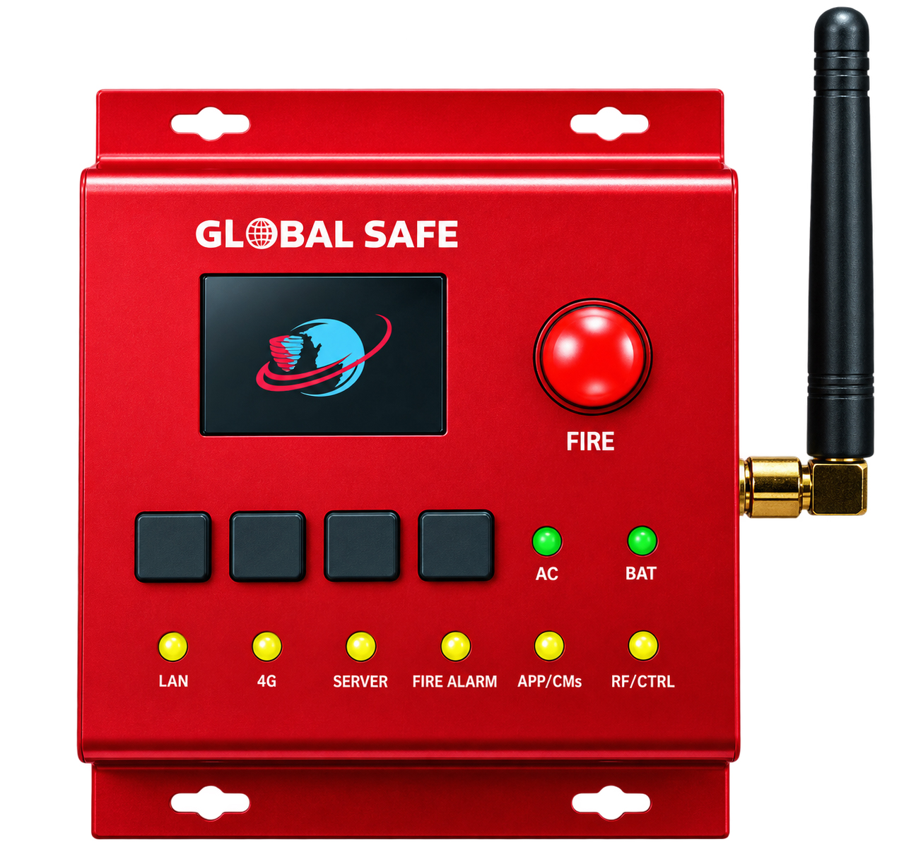
🔍 Phóng to🔍 Zoom inGATEWAY GS6
Tối ưu cho giám sát cơ bản, tương tác chủ yếu qua App di động/Web CMS với chi phí đầu tư thấp, tối ưu hiệu quả sử dụng. Optimized for essential monitoring, interacting primarily via Mobile App/Web CMS with low investment cost and maximum usage efficiency.
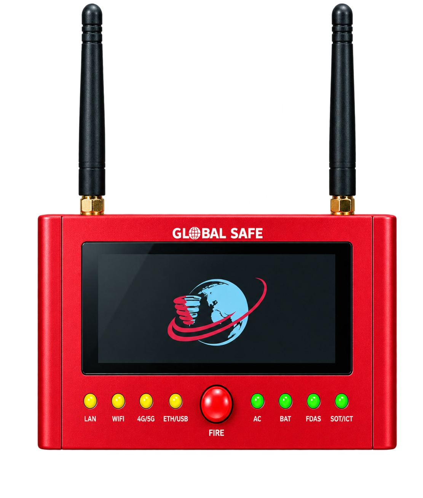
🔍 Phóng to🔍 Zoom inGATEWAY GS9
Tối ưu cho Phòng Điều Khiển Trung Tâm với màn hình tích hợp & cổng HDMI xuất đồ họa trực tiếp. Optimized for Center Control Rooms with built-in touch display & direct HDMI graphic output.
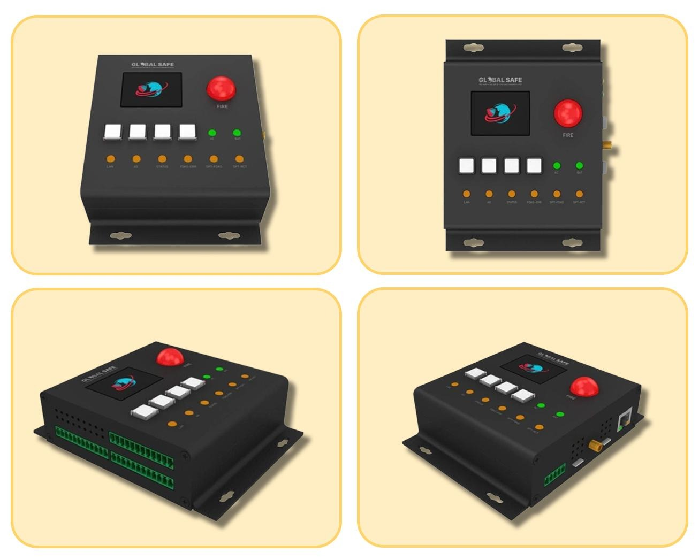
🔍 Phóng to🔍 Zoom in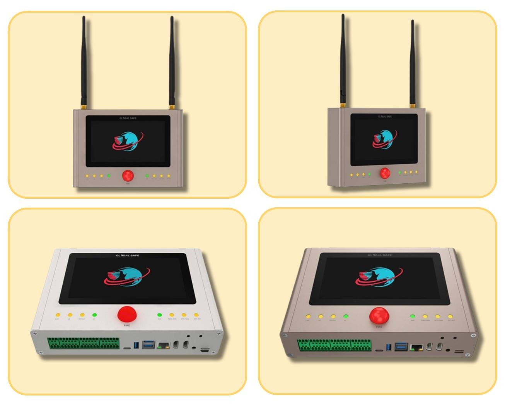
🔍 Phóng to🔍 Zoom inMô Hình Vận Hành Phòng Điều Khiển Trung Tâm Operation Model for Center Control Rooms
Minh họa hiển thị trực tiếp đồ họa mặt bằng báo cháy ra màn hình lớn qua cổng HDMI của bộ Gateway GS9 Illustration of direct fire alarm floorplan graphic display on large screens via the HDMI port of Gateway GS9
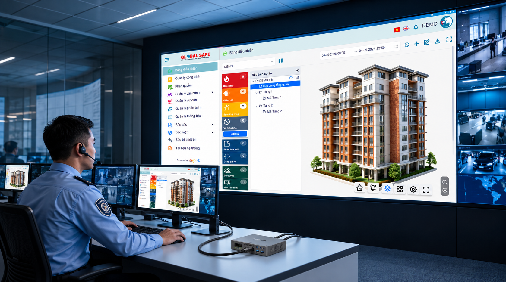
🔍 Phóng to🔍 Zoom inTrực Quan Hóa Đồ Họa Mặt Bằng Công Trình Building Floorplan Graphic Visualization
-
1
Xuất hình ảnh trực tiếp qua cổng HDMI: Nhân viên trực tại phòng điều khiển trung tâm (Center Control Room) quan sát ngay sơ đồ mặt bằng & vị trí đầu báo cháy trên màn hình lớn qua những thao tác đơn giản. Direct HDMI Graphic Output: Operators in the Center Control Room immediately observe floorplans and triggered detector locations on large screens through simple operations.
-
2
Tuân thủ Mục 6.17.2 (QCVN 06:2022/BXD - Sửa đổi 01-2023): Đáp ứng đầy đủ yêu cầu quy chuẩn thiết kế về hiển thị sơ đồ, chỉ dẫn và giám sát trạng thái hệ thống PCCC tại phòng trực trung tâm. Compliant with Section 6.17.2 (QCVN 06:2022/BXD - Amendment 01-2023): Fully satisfies national design standards for schematic display, guidance, and status monitoring in fire control rooms.
-
3
Hoạt động độc lập & đồng bộ kép: Hiển thị tại chỗ qua cổng HDMI trên thiết bị Gateway, hoạt động song song với việc đồng bộ dữ liệu lên đám mây để BQT giám sát từ xa qua hệ thống quản lý nội dung. Independent & Dual-Synced Operation: Local display via the Gateway's HDMI port runs in parallel with cloud data synchronization so Management can monitor remotely via the Content Management System (CMS).
Tương Thích Đa Dạng Đồng Bộ Tính Năng Tủ Báo Cháy Universal Compatibility Synchronizing Fire Panel Features
Sẵn sàng kết nối với hầu hết các hãng tủ báo cháy địa chỉ phổ biến tại Việt Nam và quốc tế Ready to connect with the most popular addressable fire alarm control panels in Vietnam and worldwide
Đồng Bộ Toàn Diện Tính Năng Tủ Báo Cháy Full Synchronization of Fire Panel Features
-
✓
Báo cháy & Tiền báo cháy (Fire Alarm / Pre-Alarm / Verification) Fire Alarm & Pre-Alarm (Fire Alarm / Pre-Alarm / Verification)
-
✓
Giám sát & Báo lỗi (Supervisory / Trouble / Fault / AC Loss / Battery Low) Supervisory & Fault (Supervisory / Trouble / Fault / AC Loss / Battery Low)
-
✓
Giám sát vô hiệu hóa (Disable / Enable từng đầu báo, module, zone) Disablement Monitoring (Disable / Enable individual detectors, modules, zones)
-
✓
Thông tin bảo trì (Tình trạng thiết bị: % độ bụi, thời gian phản hồi, độ che mờ - Áp dụng với hệ tủ Onyx của hãng Notifier by Honeywell) Maintenance Information (Device status: % dust level, response time, obscuration - Applicable to Notifier by Honeywell Onyx series panels)
-
✓
Đồ họa công trình số hóa trực quan hóa mọi điểm thiết bị trên mặt bằng số hóa của công trình Digitized Building Graphics visualizing every device point on the facility's digitized floorplan
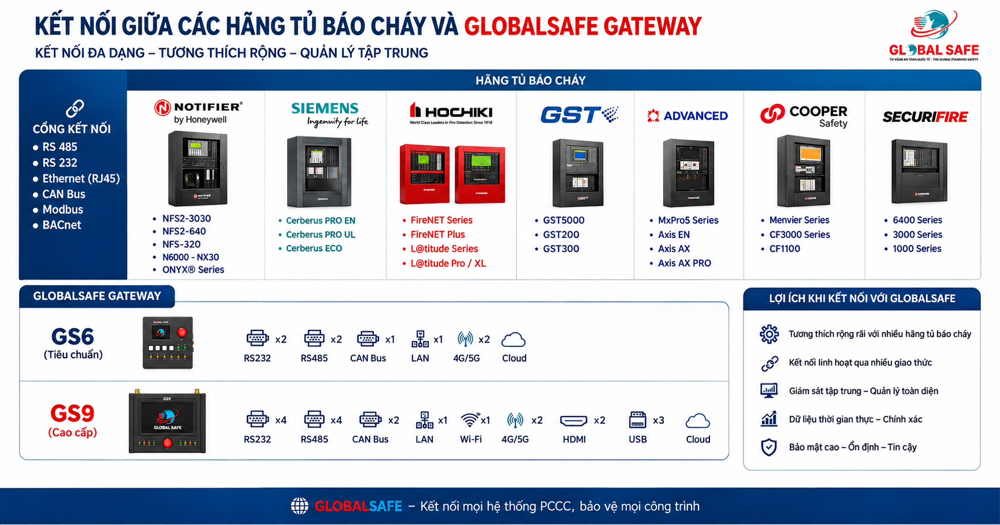
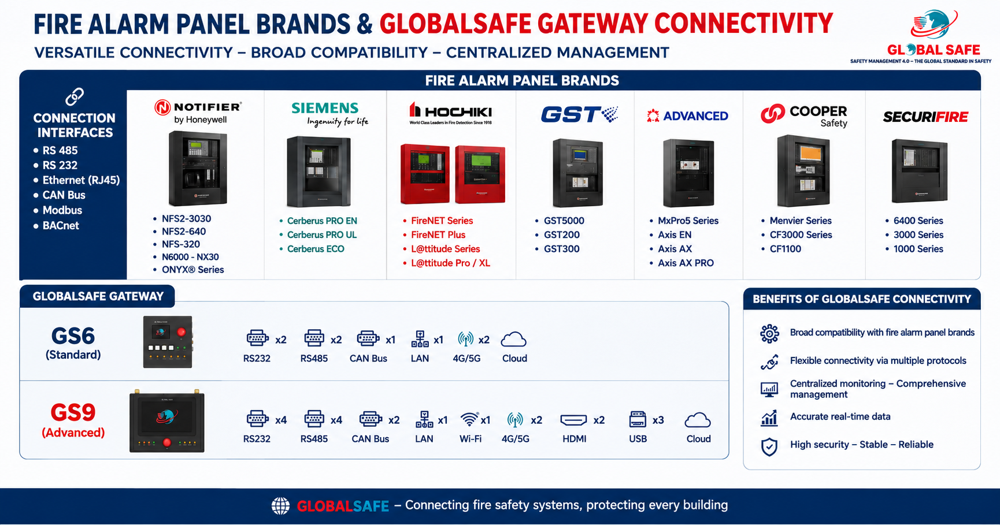
🔍 Phóng to🔍 Zoom inGiám Sát Các Hệ Thống Liên Động Qua Tủ Báo Cháy Monitoring Systems Interlocked with Fire Alarm Panels
Khi tủ trung tâm báo cháy có kết nối liên động với các hệ thống kỹ thuật khác, Global Safe tự động tiếp nhận và giám sát đồng bộ toàn bộ trạng thái kích hoạt, lỗi và vận hành theo thời gian thực: Whenever the fire alarm control panel is interlocked with building systems, Global Safe automatically receives and monitors all activation, fault, and operational statuses in real time:
-
🧯
Hệ thống chữa cháy tự động: Chữa cháy khí, chữa cháy nước Sprinkler, cụm Valve, công tắc dòng chảy và trạm bơm. Automatic Fire Suppression: Gas suppression, water Sprinkler systems, valve assemblies, flow switches, and pump stations.
-
💨
Hệ thống hút khói & cấp gió: Quạt hút khói hành lang/tầng hầm và quạt cấp gió tươi tăng áp cầu thang. Smoke Control & Ventilation: Corridor/basement smoke exhaust fans and stairwell pressurization fresh air supply fans.
-
🚪
Ngăn cháy & điều tiết cửa/van: Các hệ thống Damper (van chặn lửa/khói), cửa sập ngăn cháy và rèm ngăn khói tự động. Fire Barriers & Dampers: Fire/smoke dampers, automatic fire shutters, and motorized smoke curtains.
-
❄️
Hệ thống điều hòa & kỹ thuật tòa nhà: Trạng thái ngắt điều hòa (HVAC) và các thiết bị liên động khác (nếu hệ thống báo cháy có liên động). HVAC & Building MEP: Air conditioning (HVAC) shutdown status and other interlocked equipment (when linked to the fire panel).
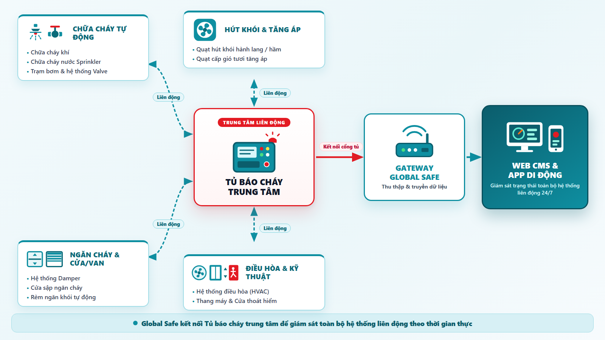
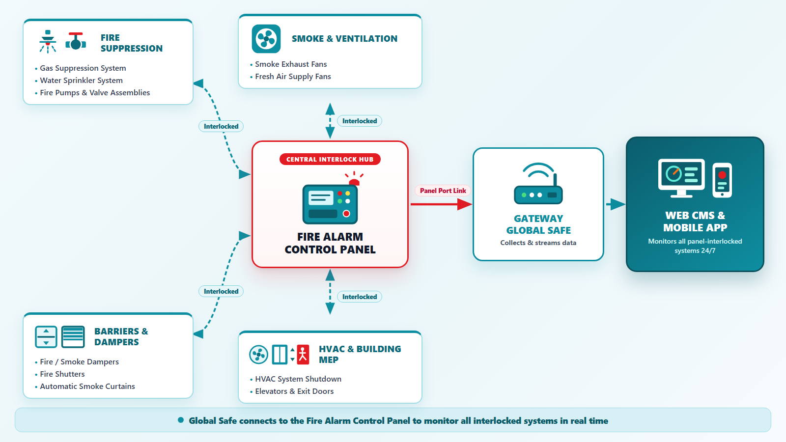
🔍 Phóng to🔍 Zoom inGLOBALSAFE + NOTIFIER (by Honeywell)
Giải pháp giám sát & quản lý toàn diện cho các dòng tủ Notifier phổ biến nhất: Comprehensive monitoring & management solution for the most widely deployed Notifier panels:
-
🔌
Cổng kết nối hỗ trợ: Printer Port, RS232, RS485, Network TCP/IP, CAN Bus. Supported Ports: Printer Port, RS232, RS485, Network TCP/IP, CAN Bus.
-
📟
Các dòng tủ hỗ trợ: NFS2-3030, NFS2-640, NFS-320, N6000, NX-30, NCA Series, ONYX Series, Inspire Series (for the future). Supported Models: NFS2-3030, NFS2-640, NFS-320, N6000, NX-30, NCA Series, ONYX Series, Inspire Series (for the future).
-
🛠️
Hỗ trợ chuyên sâu: Đọc thông số độ bụi bẩn (%) và thời gian phản hồi đầu báo phục vụ bảo trì có chọn lọc tiết kiệm chi phí (Áp dụng với nhãn hiệu tủ báo cháy NFS/NFS2-3030, NFS2-640, NFS-320). Advanced Diagnostics: Reads detector dust level (%) and response time for cost-saving selective maintenance (Applicable to fire alarm panel models NFS/NFS2-3030, NFS2-640, NFS-320).
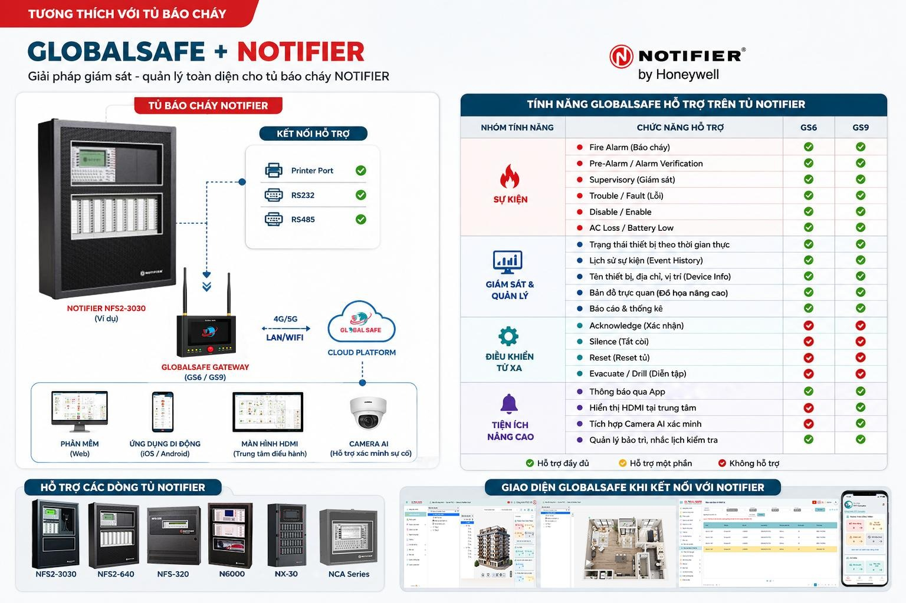
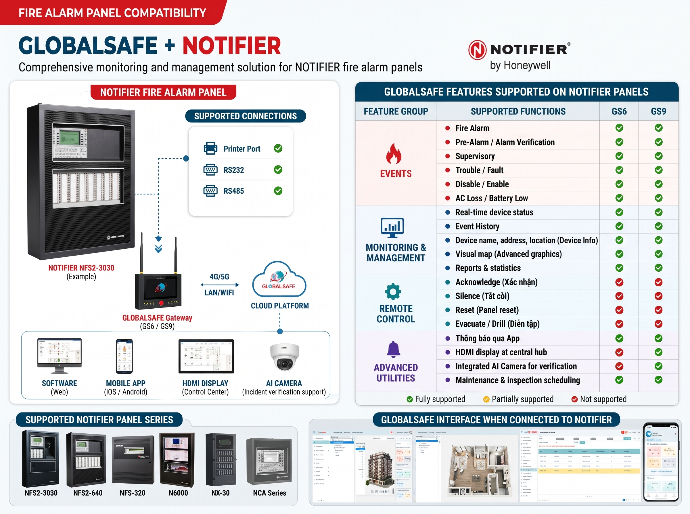
🔍 Phóng to🔍 Zoom inGLOBALSAFE + SIEMENS
Tích hợp liền mạch với các dòng tủ báo cháy công nghệ cao của Siemens: Seamless integration with Siemens high-tech addressable fire alarm systems:
-
🔌
Cổng kết nối hỗ trợ: RS232, Printer Port, FMS Port. Supported Ports: RS232, Printer Port, FMS Port.
-
📟
Các dòng tủ hỗ trợ: Cerberus ECO, Sinteso (FC20, FC2020), Cerberus Flex (for the future). Supported Models: Cerberus ECO, Sinteso (FC20, FC2020), Cerberus Flex (for the future).
-
📊
Đồng bộ đầy đủ: Sự kiện báo cháy, tiền báo cháy, lỗi thiết bị, bản đồ trực quan (Graphic Map), lịch sử sự kiện & Camera AI. Full Synchronization: Fire alarms, pre-alarms, fault events, interactive Graphic Maps, event history, and AI Camera verification.
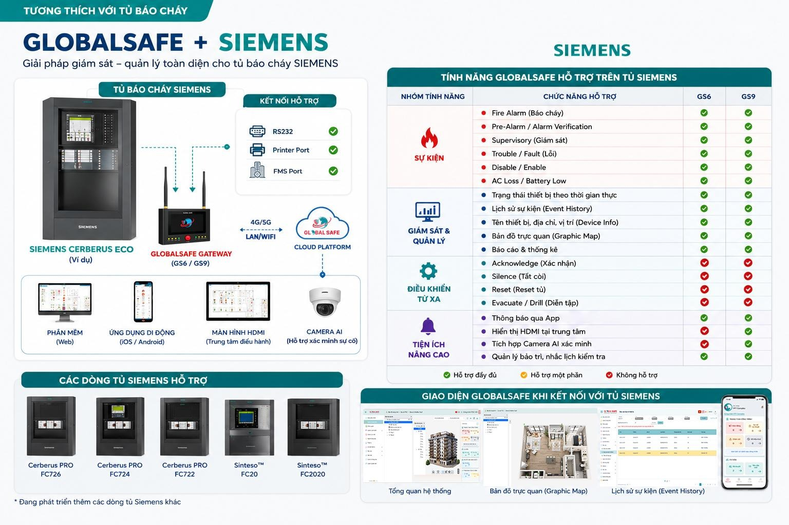
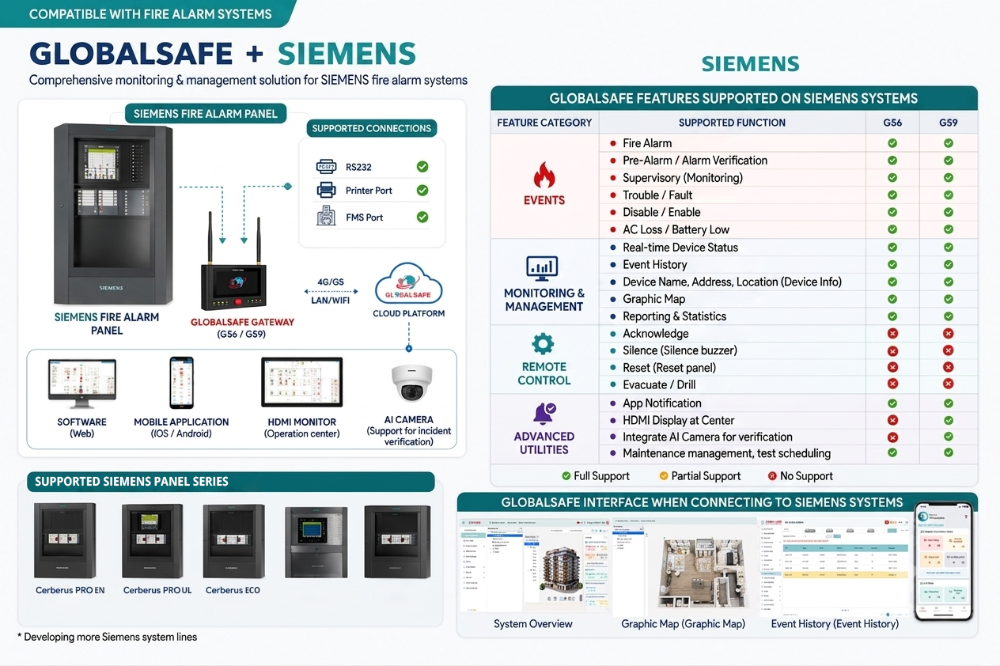
🔍 Phóng to🔍 Zoom inKiến Trúc Tính Năng & Bảng Điều Khiển Trung Tâm Feature Architecture & Central Control Dashboard
Thiết kế khoa học đáp ứng đầy đủ yêu cầu vận hành: Tính năng Cơ bản • Tính năng Nâng cao Scientifically designed to meet all operational requirements: Core Features • Advanced Features
2. Quản lý bảo trì chuyên sâu (theo dõi % độ bụi bẩn, thời gian phản hồi, ngưỡng cảnh báo cháy)
3. Tích hợp Camera giám sát (CCTV/Ai) xác thực trực quan 1. Building Graphic Digitization, Multi-site Map & Digital Escape Plans
2. Predictive Maintenance (monitoring % dust level, response time, fire alarm threshold)
3. CCTV / Ai Camera Integration for visual verification
2. Quản lý danh sách cư dân: Số hóa theo căn hộ, truy xuất nhanh khi cứu nạn & đồng bộ cảnh báo khẩn cấp. 1. Account Security & Access Audit Logs: Session/IP control, access log tracking, and transparent operation.
2. Resident Directory Management: Digitized by apartment unit for rapid rescue lookup & emergency alerts.
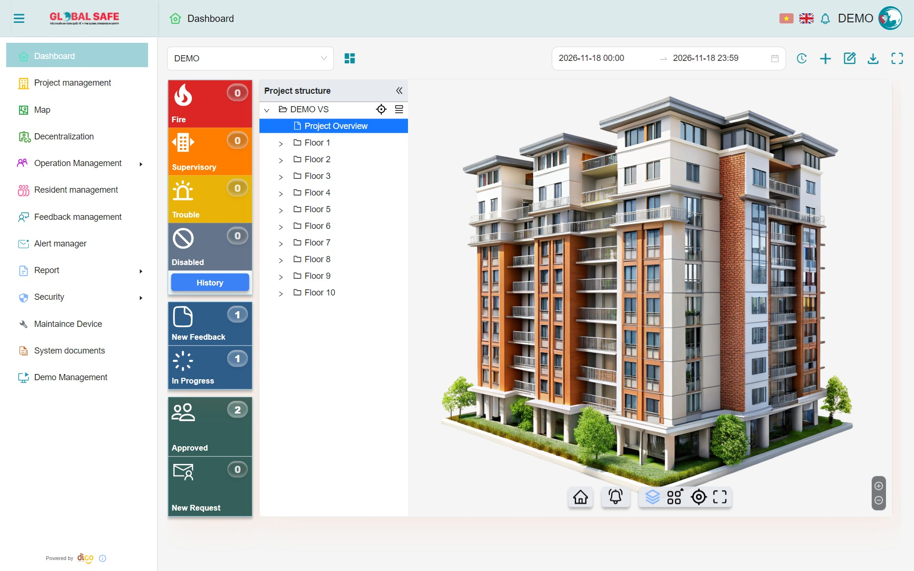
Chọn tính năng Features Giám sát trạng thái Status Monitor Quản lý user User Mgmt Chọn mặt bằng Select Floorplan Hiển thị mặt bằng Floorplan ViewKiểm Soát “Sức Khỏe” Công Trình Tập Trung Centralized Building “Health” Control
-
🔥
Theo dõi thời gian thực 4 nhóm trạng thái: Báo cháy • Cảnh báo giám sát • Sự cố kỹ thuật • Vô hiệu hóa. Real-time tracking of 4 status groups: Fire Alarm • Supervisory • Technical Fault • Disabled.
-
🌐
Số hóa đồ họa công trình trực quan ngay trên màn hình chính. Intuitive building graphic digitization right on the main screen.
-
🕒
Minh bạch toàn bộ lịch sử vận hành, người trực và thời gian xử lý. Complete transparency of operational history, on-duty personnel, and handling times.
Rút Ngắn “Thời Gian Vàng” & Tích Hợp Camera CCTV Shortening “Golden Time” & CCTV Camera Integration
Chuyển đổi từ quy trình xác minh thủ công 5 bước sang xác thực tức thì qua App & Camera trực tiếp Transitioning from a slow 5-step manual check to instant verification via Mobile App & live CCTV
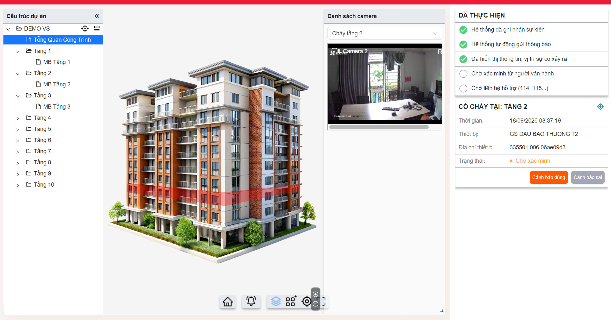
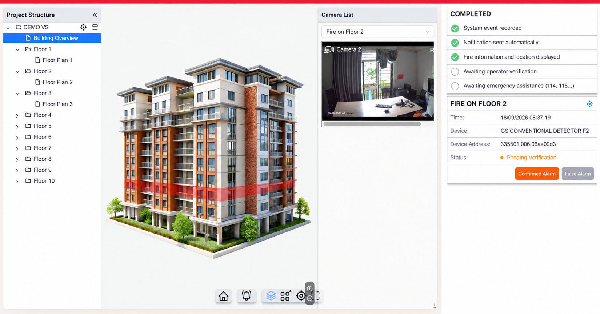
🔍 Phóng to🔍 Zoom in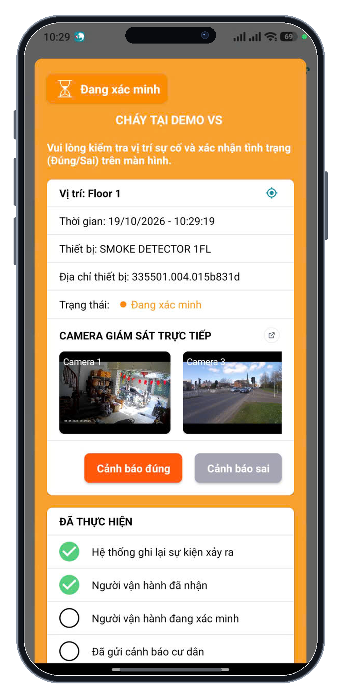
🔍 Phóng to🔍 Zoom in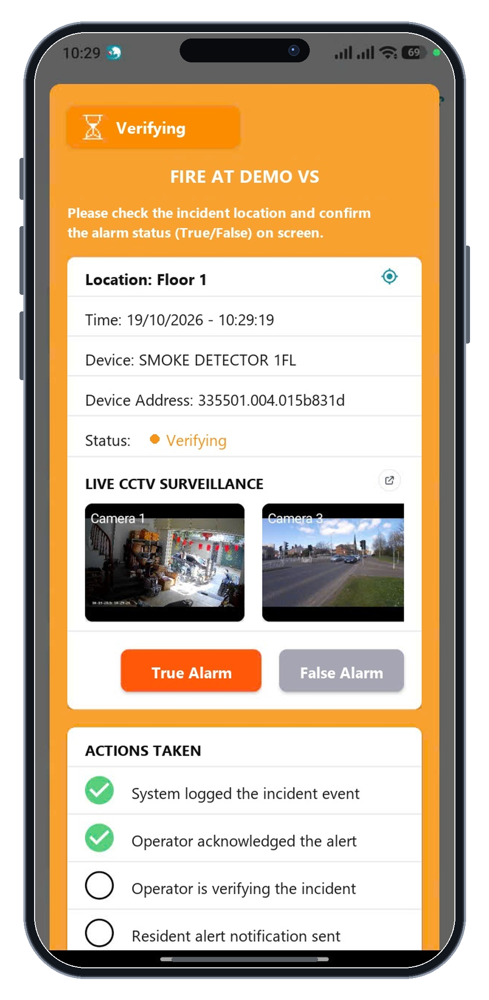
🔍 Phóng to🔍 Zoom in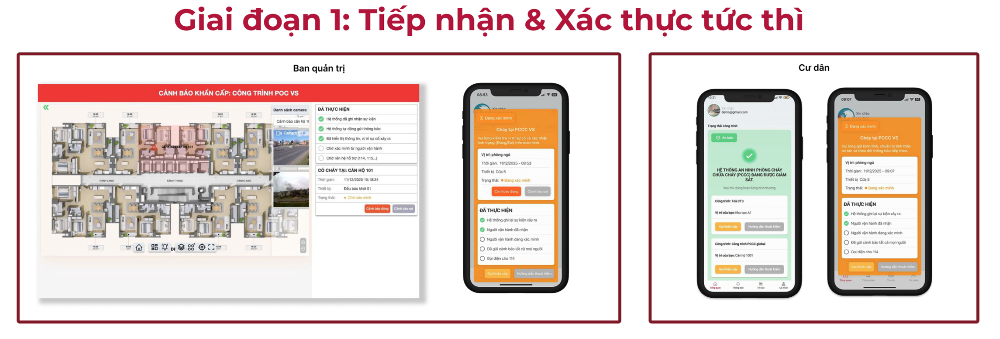
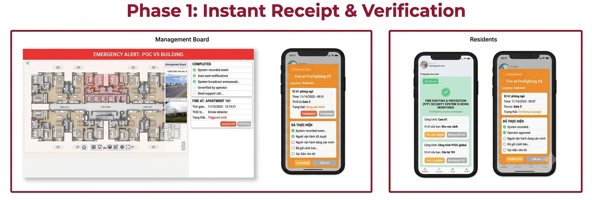
🔍 Phóng to🔍 Zoom in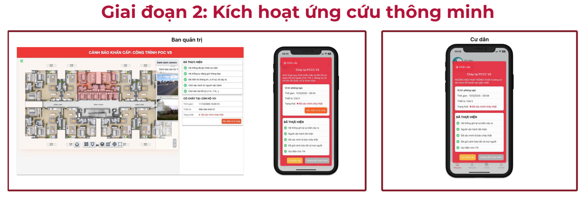
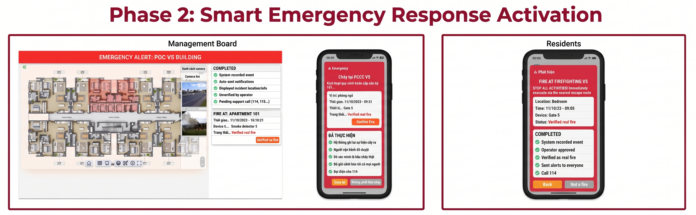
🔍 Phóng to🔍 Zoom inSo Sánh Quy Trình Cũ & Quy Trình Global Safe Comparing Traditional Process vs. Global Safe Workflow
Trực quan hóa sự khác biệt giữa quy trình thủ công (5–15 phút) và xử lý tức thì đa nền tảng (5–15 giây) Visualizing the gap between manual response (5–15 mins) and instant multi-platform verification (5–15 secs)
Thao Tác Xử Lý Thực Tế Trên Điện Thoại Real-time Operation on Mobile
Minh họa luồng nhận cảnh báo, xem vị trí & xác nhận sự cố trên giao diện ứng dụng tiếng Việt. Demonstrates real-time alert reception, location tracking & incident confirmation on the English app interface.
Số Hóa Đồ Họa Công Trình — Nhiều Cấp Độ Trực Quan Building Graphic Digitization — Multiple Visualization Levels
Từ bản đồ đa dự án toàn quốc ➔ Mô hình 2D/3D tòa nhà/công trình ➔ Mặt bằng căn hộ/khu vực ➔ Sơ đồ thoát hiểm số hóa From nationwide multi-site maps ➔ 2D/3D building/facility models ➔ Apartment/zone floorplans ➔ Digital escape plans
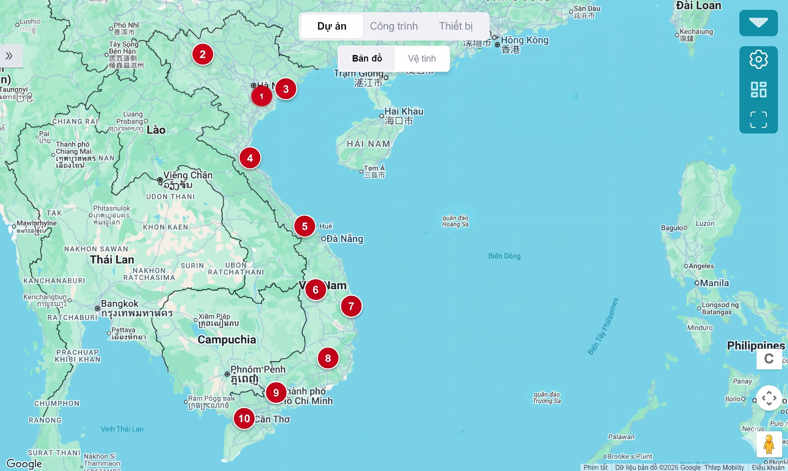
🔍 Phóng to🔍 Zoom inGiám Sát Đa Điểm Không Giới Hạn Unlimited Multi-Site Monitoring
Bao quát toàn bộ chuỗi công trình trên bản đồ Việt Nam và thế giới (theo dữ liệu vệ tinh). Oversee all facilities across Vietnam and the world map (via satellite data).
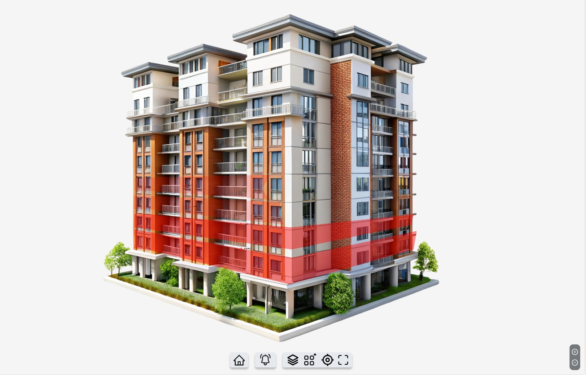
🔍 Phóng to🔍 Zoom inTrạng Thái Hệ Thống Real-time Real-Time System Status
Quan sát trực quan bằng hình ảnh 2D/3D và dữ liệu số hóa; tầng/khu vực có sự cố tự động đổi màu cảnh báo theo thời gian thực. Intuitive 2D/3D visual and digitized data monitoring; floors or zones with incidents automatically highlight in real time.
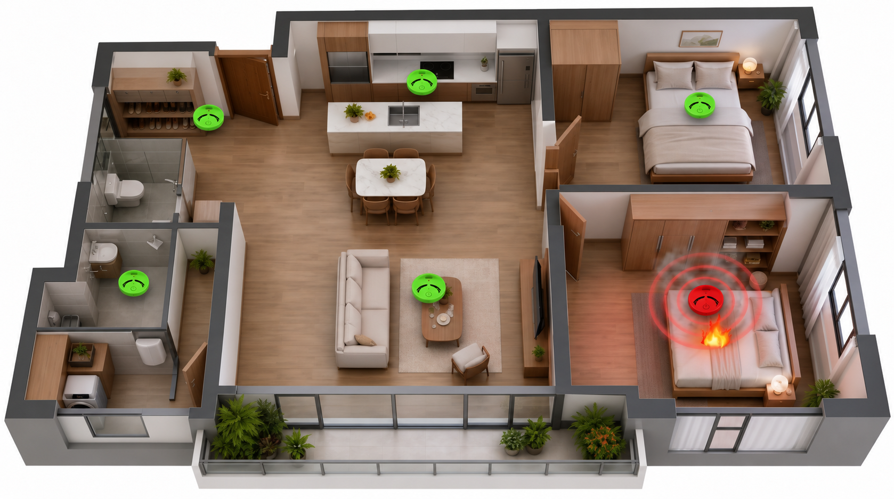
🔍 Phóng to🔍 Zoom inĐịnh Vị Đích Danh Điểm Cháy Exact Fire Point Identification
Chỉ đích danh vị trí thiết bị đang kích hoạt trong từng phòng/căn hộ, giúp lực lượng tại chỗ tiếp cận xử lý ngay trong “thời điểm vàng”. Identifies the exact triggered detector inside each room or unit, enabling on-site teams to respond within the “golden time”.
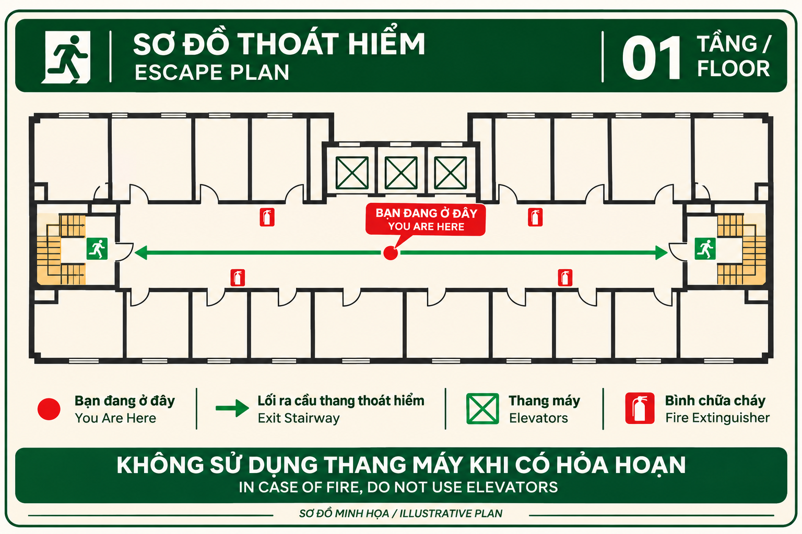
🔍 Phóng to🔍 Zoom inSơ Đồ Thoát Hiểm Số Hóa Digitized Escape Plan
Xác định lộ trình thoát hiểm tối ưu, hiển thị vị trí bình cứu hỏa, họng nước & lối cầu thang thoát nạn để sơ tán nhanh chóng. Displays optimal evacuation routes, fire extinguishers, hydrants, and emergency stairs for rapid and safe evacuation.
Quản Lý Bảo Trì Chuyên Sâu & Chế Độ Bảo Trì Thông Minh Advanced Maintenance Management & Smart Maintenance Mode
Chuyển từ bảo trì thủ công tràn lan sang bảo trì chính xác theo thông số sức khỏe thiết bị thực tế Shifting from blanket manual servicing to precision condition-based maintenance
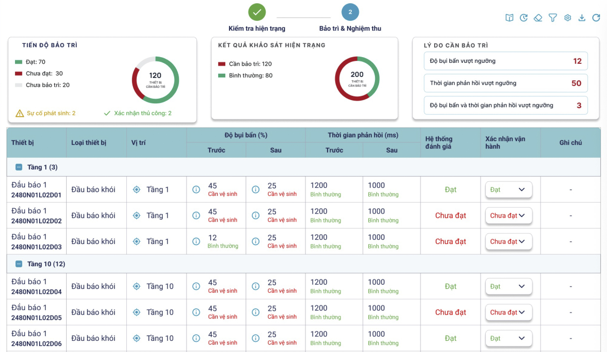
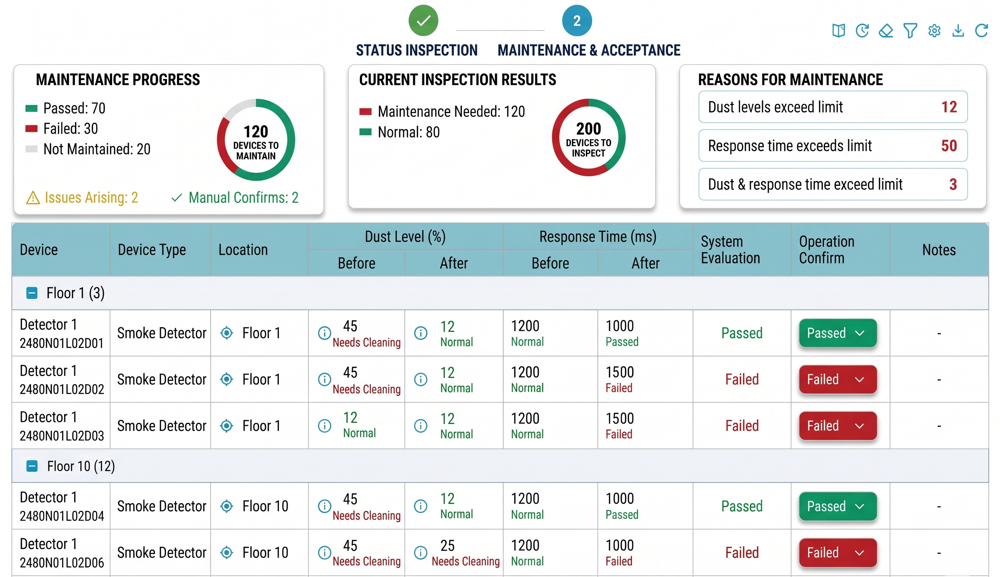
🔍 Phóng to🔍 Zoom inGiám Sát “Sức Khỏe” Thiết Bị Từ Xa Remote Device “Health” Diagnostics
-
🩺
Đo lường chính xác thông số vật lý: Theo dõi Độ bụi bẩn (%), Ngưỡng cảnh báo cháy và Thời gian phản hồi (ms) của từng đầu báo khói/nhiệt trước và sau khi vệ sinh. Precise Physical Metrics: Tracks Dust Level (%), Fire Alarm Threshold, and Response Time (ms) of each smoke/heat detector before and after cleaning.
-
💰
Cắt giảm lãng phí: Chỉ vệ sinh hoặc thay thế khi thiết bị thực sự vượt ngưỡng cần bảo trì, tránh bảo dưỡng tràn lan hoặc bỏ sót đầu báo lỗi. Eliminate Waste: Clean or replace only detectors that exceed maintenance thresholds, avoiding unnecessary servicing or missed faulty units.
-
🛠️
Kéo dài tuổi thọ hệ thống: Phát hiện sớm suy hao để tối ưu lịch trình bảo dưỡng định kỳ và nghiệm thu minh bạch. Extend System Lifespan: Early degradation detection optimizes periodic maintenance schedules and ensures transparent acceptance.
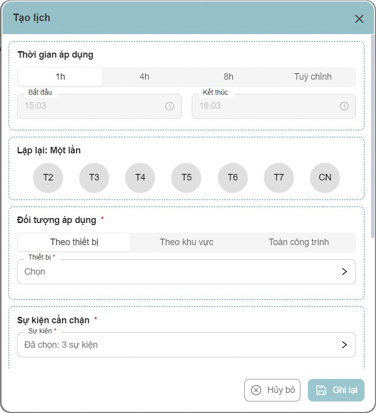
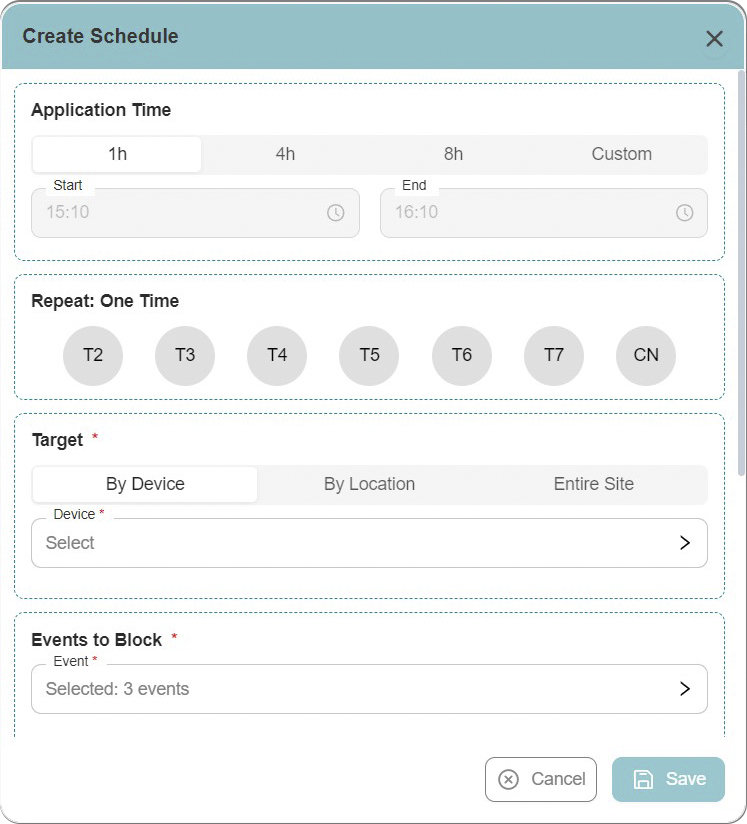
🔍 Phóng to🔍 Zoom inChế Độ Bảo Trì — Chủ Động Loại Bỏ Nhiễu Maintenance Mode — Proactive Noise Suppression
-
🔇
Chặn cảnh báo giả khi kiểm tra thiết bị: Trong khung giờ kỹ thuật viên thử khói/bảo trì (theo thiết bị, khu vực hoặc toàn công trình), hệ thống tự động chặn thông báo đẩy để không làm ảnh hưởng vận hành. Block False Alerts During Testing: During scheduled smoke testing/maintenance (by device, zone, or building), the system automatically mutes push notifications to avoid disrupting operations.
-
🛡️
Duy trì dữ liệu sạch & Đầy đủ log: Dù chặn thông báo đẩy làm phiền, toàn bộ lịch sử sự kiện vẫn được ghi nhận 100% vào hệ thống báo cáo. Clean Data & Full Audit Trail: While push alerts are muted, 100% of events are still logged in the reporting database.
-
⚖️
Minh bạch hóa quy trình: Lưu vết người tạo lịch và lý do bảo trì, đảm bảo tính pháp lý khi thanh/kiểm tra. Transparent Process: Records the scheduler identity and maintenance reason, ensuring full legal compliance during inspections.
Báo Cáo Pháp Lý, Phân Tích Báo Giả & Kết Nối Cư Dân Compliance Reports, False Alarm Analytics & Resident Portal
Loại bỏ hoàn toàn sổ sách giấy tờ, định vị “điểm đen” báo giả và số hóa tương tác BQT – Cư dân Eliminating paper logbooks, pinpointing false-alarm “black spots”, and digitizing Admin–Resident communication
📑 Báo Cáo Sự Kiện (Số hóa 100%) 📑 Event Reports (100% Digitized)
An toàn pháp lýLegal Compliance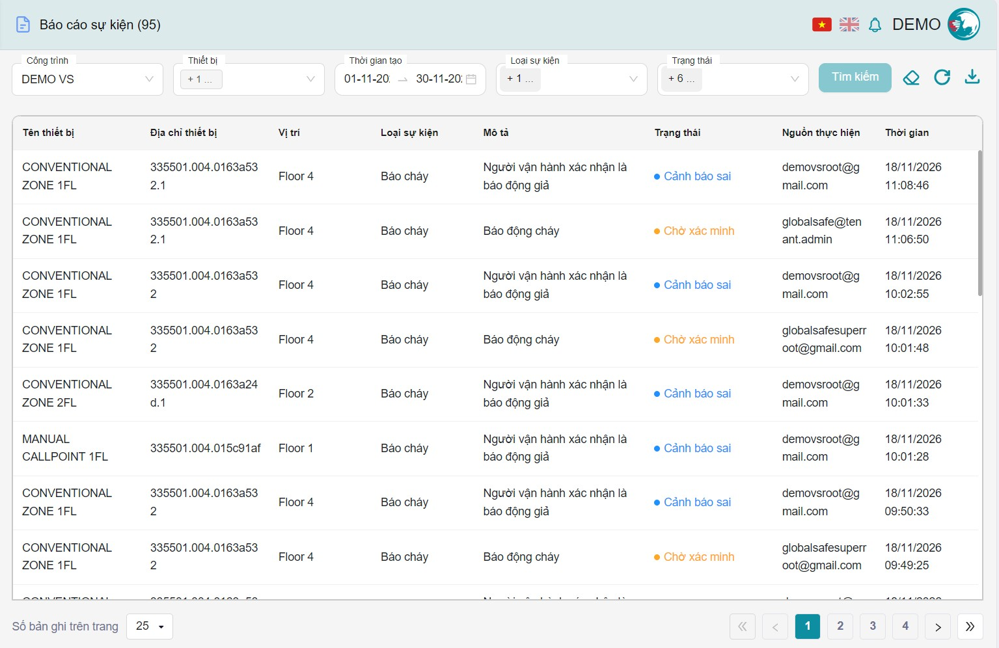
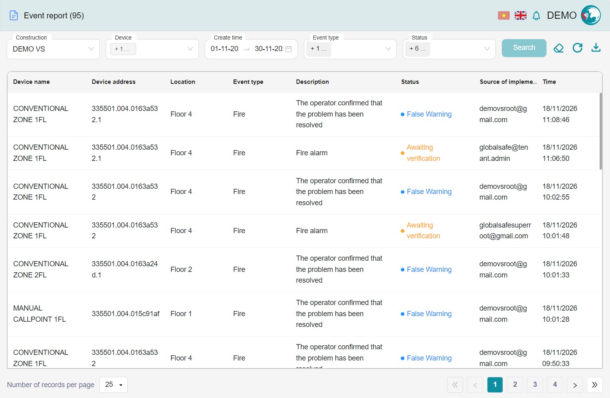
🔍 Phóng to🔍 Zoom inLoại bỏ sổ sách thủ công, tránh thất lạc dữ liệu; cung cấp bằng chứng minh bạch trước cơ quan chức năng; tìm kiếm sự cố & người trực trong vài giây. Eliminates manual logbooks and data loss; provides transparent legal evidence for authorities; searches incidents and on-duty staff in seconds.
📉 Phân Tích Báo Giả (Định vị “Điểm đen”) 📉 False Alarm Analytics (“Black Spot” Detection)
Loại bỏ báo nhiễuNoise Reduction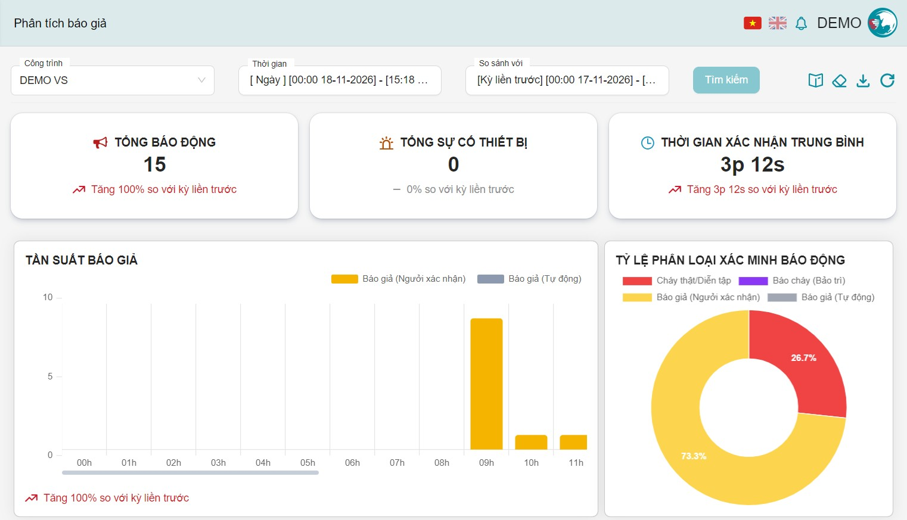
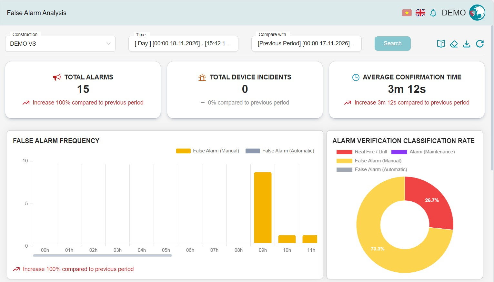
🔍 Phóng to🔍 Zoom inThống kê tần suất và tỷ lệ báo giả theo khu vực/thời gian; chỉ đích danh các đầu báo thường xuyên gây lỗi nhiễu để kỹ thuật xử lý dứt điểm. Analyzes false alarm frequency and ratio by zone/time; pinpoints recurring faulty detectors so technicians can resolve root causes permanently.
📢 Kênh Truyền Thông & Thông Báo Số 📢 Digital Communication & Notification Channel
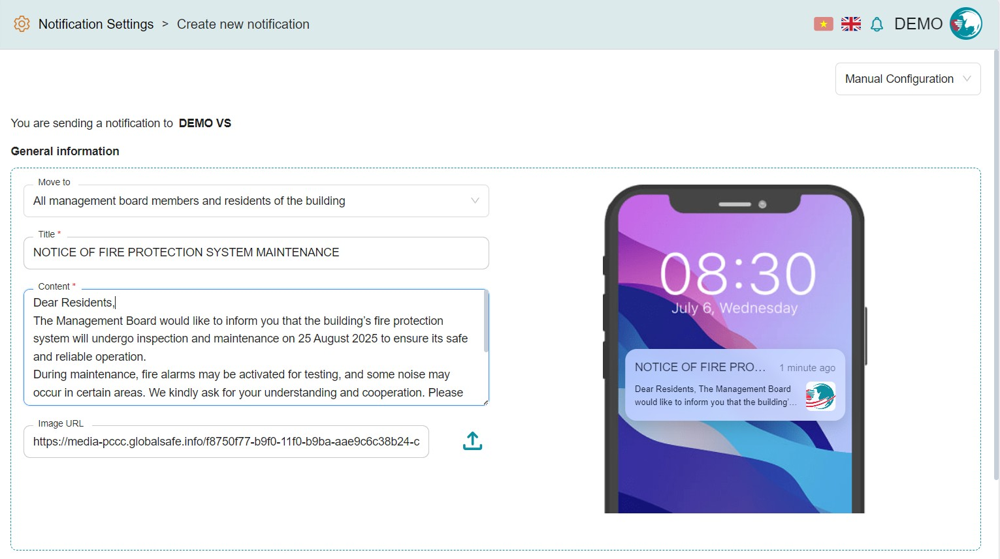
🔍 Phóng to🔍 Zoom inThay thế việc dán giấy bảng tin bằng thông báo App chuyên nghiệp. Phân nhóm đúng người – đúng tầng, lập lịch gửi tự động trước khi kiểm tra PCCC. Replaces paper notices with professional App notifications. Target the right residents by floor/building with automated scheduling before fire drills or tests.
💬 Góp Ý & Phản Ánh An Toàn Từ Cư Dân 💬 Resident Safety Feedback & Reporting
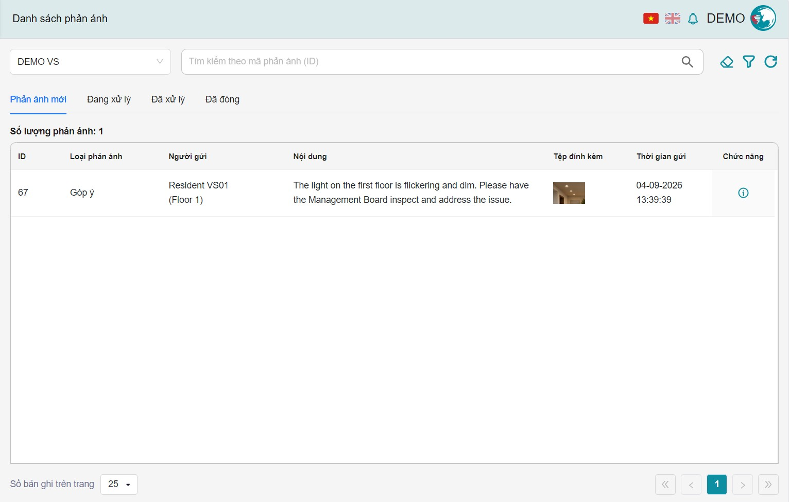
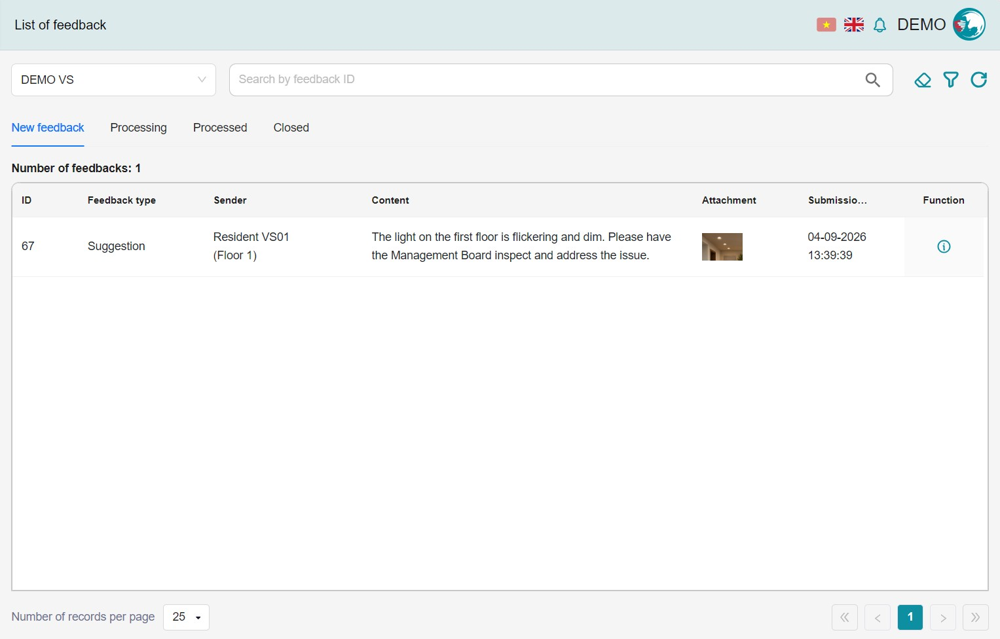
🔍 Phóng to🔍 Zoom in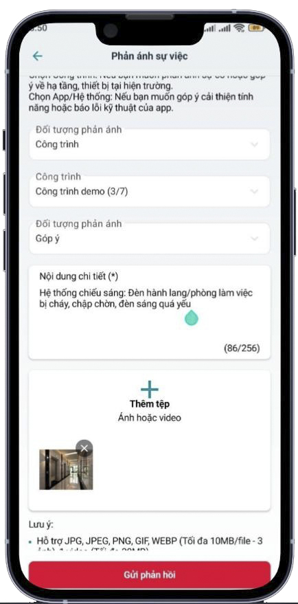
🔍 Phóng to🔍 Zoom inCư dân chụp ảnh/video phản ánh trực tiếp (cửa thoát hiểm kẹt, vật cản hành lang, đèn hỏng...); theo dõi tiến độ Mới ➔ Đang xử lý ➔ Đã xử lý. Residents submit photos/videos of hazards (jammed exit doors, blocked corridors, broken lights...) and track status in real time: New ➔ Processing ➔ Resolved.
🔐 Bảo Mật Phiên Đăng Nhập & Nhật Ký Truy Cập 🔐 Login Session Security & Access Audit Logs
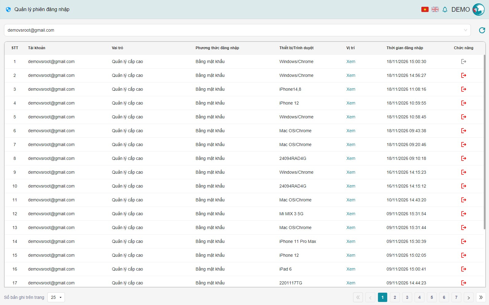
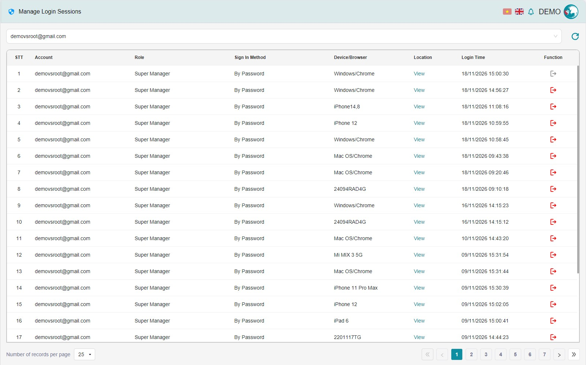
🔍 Phóng to🔍 Zoom inGiám sát chi tiết thiết bị, trình duyệt và địa chỉ IP đăng nhập; lưu vết mọi thao tác của người vận hành, không thể tẩy xóa dữ liệu. Monitors logged-in devices, browsers, and IP addresses; records every operator action with tamper-proof audit logs.
👥 Số Hóa Danh Mục Cư Dân Phục Vụ Cứu Nạn 👥 Digitized Resident Directory for Emergency Rescue
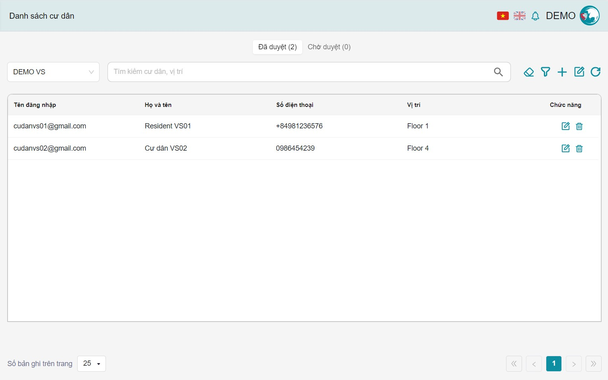
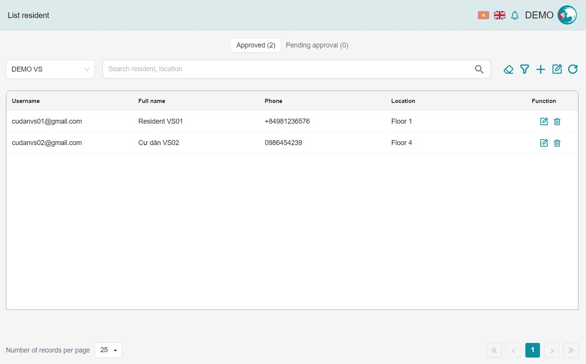
🔍 Phóng to🔍 Zoom inQuản lý khoa học theo căn hộ/tầng; truy xuất tức thì danh sách cư dân tại khu vực sự cố để hỗ trợ cứu nạn và tự động đồng bộ nhận cảnh báo khẩn cấp. Organized by apartment/floor; instant lookup of residents in affected zones to assist rescue teams and sync emergency alerts.
Tài Khoản Quản Trị Administrator Account
-
✓
Thiết lập & cấu hình dự án: Khởi tạo dự án, tòa nhà, phân tầng, khu vực và cập nhật mặt bằng đồ họa số. Project Setup & Config: Create projects, buildings, floors/zones, and manage digital graphic floorplans.
-
✓
Quản lý thiết bị toàn diện: Thêm, sửa, xóa hoặc thay đổi thông tin Gateway, tủ báo cháy, đầu báo và Camera liên kết. Full Device Management: Add, edit, delete, or update Gateways, fire panels, detectors, and linked CCTV cameras.
-
✓
Phân quyền & bảo mật: Cấp phát tài khoản, phân quyền chi tiết từng nhóm người dùng và kiểm tra nhật ký truy cập. Access Control & Security: Provision accounts, assign granular role permissions, and audit system access logs.
Người Vận Hành Operator Account
-
✓
Giám sát trạng thái tủ Real-time: Theo dõi liên tục tín hiệu báo cháy, báo lỗi, mất kết nối và trạng thái thiết bị 24/7. Real-Time Panel Monitoring: Continuously monitor fire alarms, faults, disconnections, and device statuses 24/7.
-
✓
Xác nhận báo cháy thật / giả: Kiểm tra vị trí chính xác trên mặt bằng số và đối chiếu hình ảnh Camera tại điểm kích hoạt. Verify Real vs. False Alarms: Inspect exact locations on digital floorplans and verify via live CCTV at triggered zones.
-
✓
Kích hoạt cảnh báo & xử lý: Phát thông báo cảnh báo khẩn cấp, điều phối lực lượng tại chỗ và vận hành chế độ bảo trì. Trigger Alerts & Dispatch: Broadcast emergency alerts, coordinate on-site response teams, and manage maintenance mode.
Cư Dân Resident Account
-
✓
Giám sát khu vực / tầng sinh sống: Theo dõi trạng thái an toàn PCCC tại đúng tầng hoặc khu vực căn hộ mình đang ở. Monitor Own Floor / Zone: View fire safety status specifically for their own residential floor or building zone.
-
✓
Nhận cảnh báo cháy tức thì: Nhận thông báo đẩy khẩn cấp qua App di động ngay khi có sự cố cháy tại khu vực liên quan. Instant Fire Alerts: Receive immediate push notifications on the Mobile App whenever a fire event affects their area.
-
✓
Hướng dẫn sơ tán an toàn: Xem sơ đồ chỉ dẫn lối thoát hiểm nhanh nhất để sơ tán kịp thời và gửi góp ý/phản ánh. Safe Evacuation Guidance: View fastest escape route maps for timely evacuation and submit safety feedback.
Quy Trình Triển Khai Tiêu Chuẩn & Cam Kết “3 Không” Standard Deployment Process & “3 NOs” Commitment
Thi công lắp đặt song song, nhanh gọn, hoàn toàn không ảnh hưởng đến vận hành và pháp lý PCCC hiện hữu Parallel, non-intrusive installation with zero impact on existing fire system operations and legal certification
1. KHÔNG CAN THIỆP VẬN HÀNH 1. NO OPERATIONAL INTERFERENCE
Thiết bị hoạt động ở chế độ “Read-Only” (Đọc dữ liệu thụ động). Không gửi lệnh can thiệp ngược lại tủ báo cháy trung tâm. Operates in passive “Read-Only” mode. Does not send control commands back to the central fire alarm panel.
2. KHÔNG GIÁN ĐOẠN HỆ THỐNG 2. NO SYSTEM DOWNTIME
Đấu nối song song hoàn toàn. Không cần tắt tủ, không dừng hệ thống PCCC trong suốt quá trình thi công lắp đặt. 100% parallel wiring. No panel power-off and no fire system downtime throughout installation.
3. KHÔNG PHÁ VỠ QUY HOẠCH 3. NO STRUCTURAL ALTERATION
Kết nối qua cổng truyền thông công nghiệp có sẵn trên tủ báo cháy. Không đục phá tường đi dây lại, giữ nguyên 100% kiểm định PCCC. Connects via built-in industrial communication ports on the fire alarm panel. No wall drilling or rewiring, preserving 100% of existing fire safety certifications.
Bảng Báo Giá Tổng Hợp Master Quotation
Cấu trúc chi phí rõ ràng, linh hoạt theo quy mô đầu báo của từng công trình Transparent and flexible cost structure scaled to the number of detectors in each facility
| Hạng mục / Dịch vụItem / Service | Đơn vịUnit | Đơn giá tham khảo (VNĐ)Reference Price (VND) | Ghi chúNotes |
|---|---|---|---|
| I. THIẾT BỊ PHẦN CỨNG GATEWAYI. GATEWAY HARDWARE DEVICE | |||
| 1. Bộ thiết bị Gateway GS6 tiêu chuẩn (kết nối tủ, thu phát tín hiệu) 1. Standard Gateway GS6 Unit (panel connection & signal transceiver) | Bộ (×1)Set (×1) | 8,800,000 | Đầu tư 1 lầnOne-time hardware |
| II. DỊCH VỤ SỐ HÓA DỮ LIỆU & MẶT BẰNGII. DATA & FLOORPLAN DIGITIZATION SERVICES | |||
| 2. Số hóa cơ bản (Text) – cấu hình thiết bị trên hệ thống 2. Basic Digitization (Text) – device configuration on platform | ĐiểmPoint | 3,500 | Thiết lập ban đầuInitial setup |
| 3. Cấu hình đồ họa 3D – mapping thiết bị lên mặt bằng số 3. 3D Graphic Mapping – mapping devices onto digital floorplans | ĐiểmPoint | 2,500 | Trực quan hóa 2D/3D2D/3D visualization |
| 4. Xử lý file CAD mặt bằng (làm sạch layer, dọn rác bản vẽ) 4. CAD Floorplan Processing (layer cleanup & optimization) | Mặt bằngFloorplan | 90,000 | Theo số mặt bằngPer floorplan |
| III. THUÊ BAO NỀN TẢNG (GÓI 3 NĂM — TB3Y)III. PLATFORM SUBSCRIPTION (3-YEAR PLAN — TB3Y) | |||
| 5a. Quy mô < 1.000 đầu báo 5a. Scale < 1,000 detectors | ThángMonth | 400,000 | Miễn phí OTP 10 TK đầuFree OTP for first 10 users |
| 5b. Quy mô 1.001 – 4.000 đầu báo 5b. Scale 1,001 – 4,000 detectors | ThángMonth | 500,000 | Miễn phí OTP 30 TK đầuFree OTP for first 30 users |
| 5c. Quy mô > 4.000 đầu báo 5c. Scale > 4,000 detectors | ThángMonth | 600,000 | Miễn phí OTP 50 TK đầuFree OTP for first 50 users |
| 6. Phí OTP / SMS User (xác thực tài khoản mở rộng) 6. OTP / SMS User Fee (additional account verification) | User/nămUser/year | 500 | Theo thực tếActual usage |
Chỉ Từ 10.000 VNĐ / Ngày From Only 10,000 VND / Day
Để sở hữu hệ thống giám sát PCCC trực tuyến 24/7, lưu trữ đám mây an toàn và ứng dụng quản lý không giới hạn khoảng cách. Own a 24/7 online fire monitoring system, secure cloud storage, and distance-free management applications.
-
✓
Tặng thêm 03 tháng miễn phí: Tổng thời gian sử dụng thực tế lên tới 39 tháng cho gói thuê bao 3 năm. +3 Months Free Bonus: Total actual service duration of 39 months with the 3-year subscription package.
-
✓
Chính sách cho Chung cư / Nhà cao tầng: Phí thuê bao cho 1 user hộ gia đình từ năm thứ 2 chỉ 25.000 VNĐ / hộ gia đình / năm. Apartment / High-Rise Policy: Resident household subscription from Year 2 is only 25,000 VND / household / year.
-
ℹ
Đây là báo giá sản phẩm & dịch vụ tham khảo, chưa phải là giá bán cuối cùng. This is a reference product & service quotation and not the final selling price.
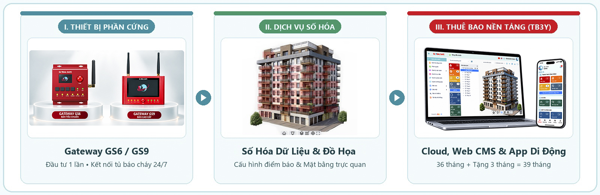
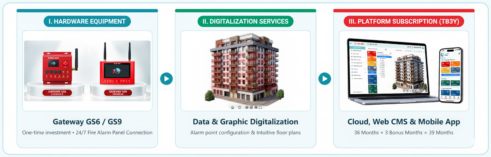
🔍 Phóng to🔍 Zoom in
Kỷ Nguyên Mới Của
An Toàn PCCC Số Hóa
A New Era of
Digitized Fire Safety
Hệ thống của bạn đã sẵn sàng cho bước nhảy vọt về chuyển đổi số trong tương lai? Is your facility ready for the digital leap toward future fire safety transformation?